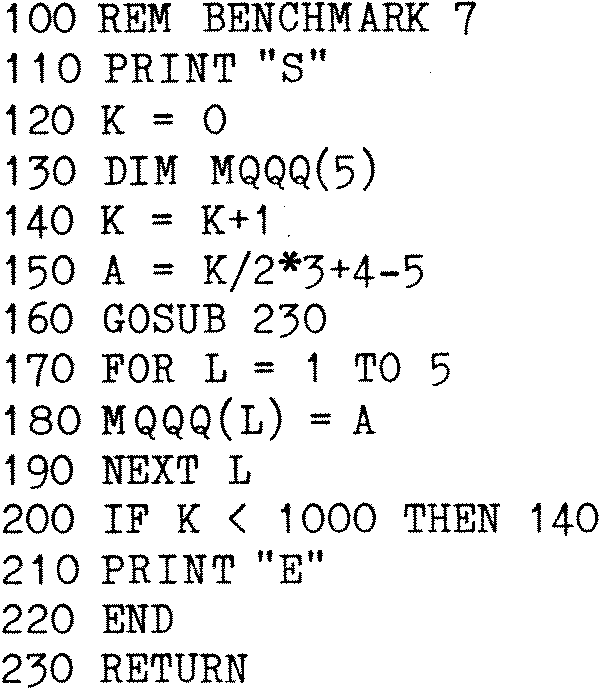

80-Bus News |
May–June 1983 · Volume 2 · Issue 3 |
| Page 46 of 59 |
|---|
The listing on the following pages is for a utility that I wrote to give a variable cross-reference listing of a Nascom BASIC program. One of the problems of Nascom BASIC is that only the first two characters of a variable name are used, so that AQS, AQ and AQ1, which are all valid names, are considered identical. A number of people make this mistake in their programs – I have certainly done so, and for a beginner it is often not obvious what is wrong.
This program may help in this respect, and I have also found it useful when developing or changing a program sometime after it was originally written. It is also very useful when developing a large program where a large number of variable names can become a problem.
The program is located in RAM between 0C80H and 0F65 and will give a sorted list of variable names (only the first two characters being displayed to avoid confusion). String variables are identified by a ‘$’ and array variables by a ‘(’, followed by a list of the statement numbers in which that variable is referenced.
For example, the following slightly modified benchmark program:–

Would result in a screen containing:–
| < Nascom Cross Reference > | ||||
| A | 150 | 180 | ||
| K | 120 | 140 | 150 | 200 |
| L | 170 | 180 | 190 | |
| MQ( | 130 | 180 | ||
The program is very easy to run. Leave BASIC using the Monitor command. Load the utility from tape or disk (once loaded it can be left for future use as BASIC does not use that portion of RAM). Run the program by entering EC80, which will give you the maximum of a screenful of information for studying. To continue press any key, which will give successive screens until the listing is complete, and then return to the monitor. BASIC can be re-entered if desired by using the warm start command (Z).
One word of warning. This program generates a lot of data. This is stored at the end of the BASIC program and in normal use presents no problem. However, in the case of a very large program the data can overflow the available space with unpredictable results. You are therefore advised to save any large BASIC program before running this utility. I have never had any program corrupted, but it is possible.
| Page 46 of 59 |
|---|